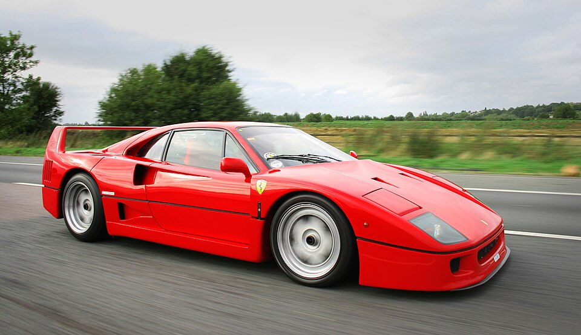
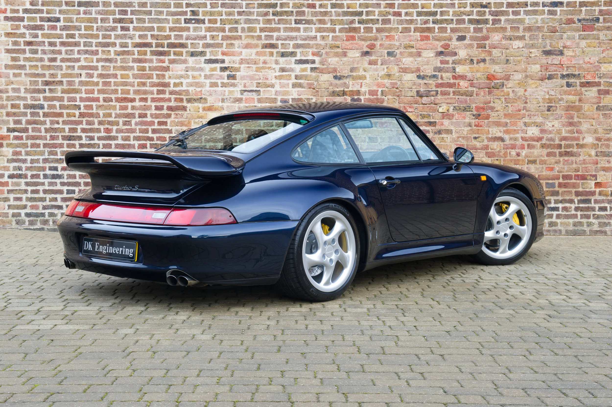
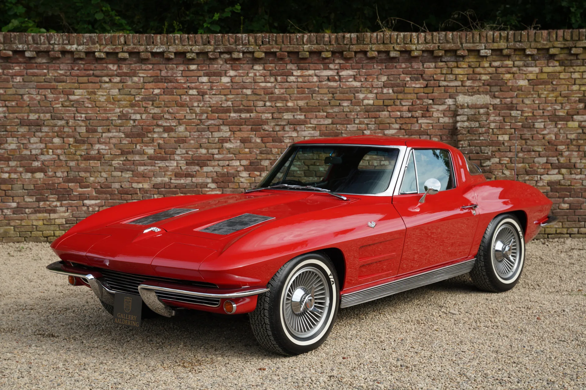
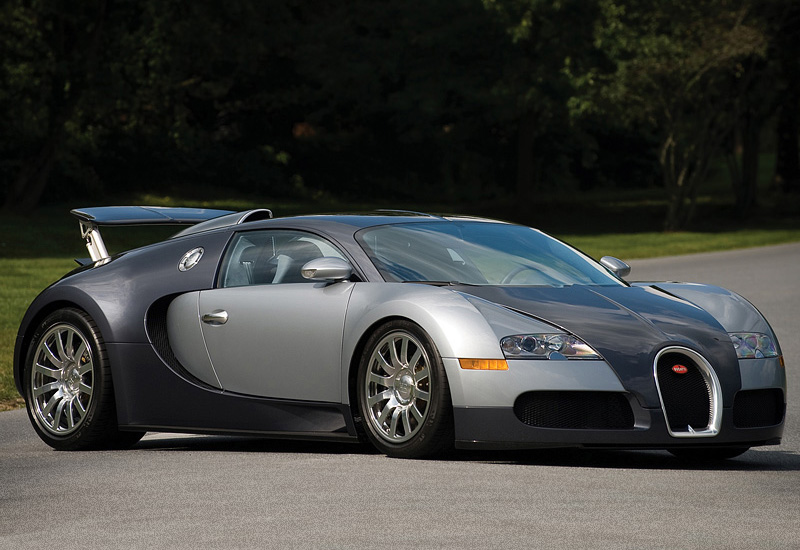

Le Showroom : Modèles Iconiques
Plongez au cœur de notre sélection de voitures de légende. Du chef-d'œuvre de design à la supercar d'exception, pour moi, ces quatre modèles incarnent l'excellence et la passion automobile.
Ferrari F40
Présentée en 1987
Dernière création supervisée du vivant d'Enzo Ferrari, la F40 est considérée comme l'ultime supercar analogique. Conçue pour célébrer les 40 ans de la marque au cheval cabré, elle se distingue par sa carrosserie spectaculaire en kevlar et carbone, son aileron mythique et des sensations de conduite brutes sans assistances électroniques.
- Constructeur : Ferrari
- Type : supercar
- Moteur : Moteur V8 Bi-Turbo développant 478 ch
- À retenir : Première voiture de série à franchir la barre mythique des 320 km/h

Porsche 911 Turbo S de type 993
Commercialisée en 1997
Considérée par les passionnés comme le graal absolu, la 993 Turbo S représente l'apogée ultime de la lignée des Porsche 911 à refroidissement par air (Aircooled). Avec son aileron arrière imposant, ses quadruples sorties d'échappement et sa transmission intégrale, elle allie un comportement impérial à une puissance démoniaque.
- Constructeur : Porsche
- Type : Supercar / GT d'exception
- Moteur : Moteur Flat-6 Bi-Turbo de 3.6 L développant 450 ch
- À retenir : Dernière 911 Turbo à moteur refroidi par air de l'histoire

Chevrolet Corvette C2 Sting Ray
Commercialisée en 1963
Inspirée des requins et des lignes aéronautiques, la Corvette C2 est sans doute la Muscle Car américaine la plus élégante et agressive de son époque. Avec sa vitre arrière séparée (Split Window) emblématique du modèle 1963 et ses phares escamotables, elle est une véritable œuvre d'art sur roues.
- Constructeur : Chevrolet
- Type : Muscle Car
- Signe distinctif : Design « Sting Ray » et suspensions arrières indépendantes
- À retenir : Le symbole absolu du rêve automobile américain des années 60

Bugatti Veyron 16.4
Révélée en 2005
Conçue par le groupe Volkswagen pour repousser toutes les limites de la physique, la Bugatti Veyron a redéfini le concept de l'hypercar. Alliant le luxe absolu d'une limousine à la puissance démesurée d'un engin de course, elle a été la première voiture de série à dépasser les 1 000 chevaux et les 400 km/h.
- Constructeur : Bugatti
- Type : Hypercar
- Signe distinctif : Moteur W16 Quadri-Turbo de 8,0 Litres
- À retenir : Plus de 1 001 ch et une vitesse de pointe légendaire de 407 km/h

Envie d'admirer d'autres carrosseries sous tous les angles ? Découvrez notre collection visuelle dans le garage photo.